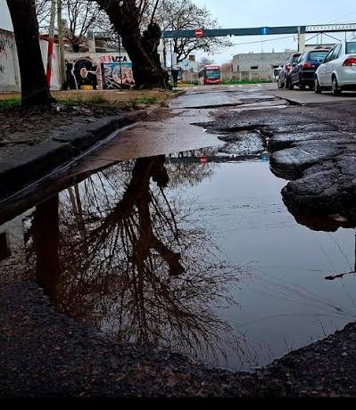
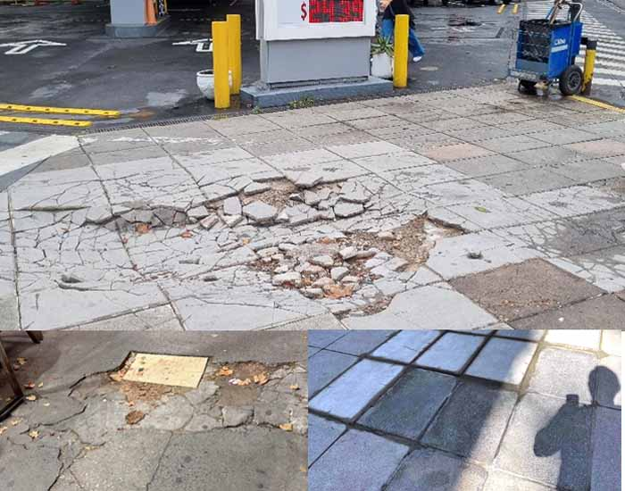
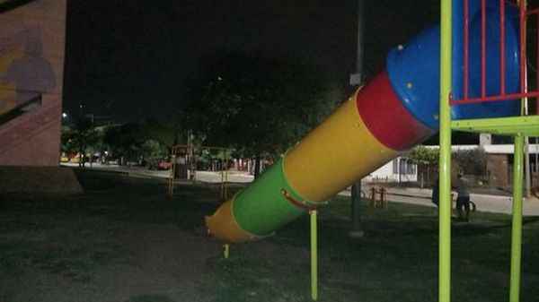
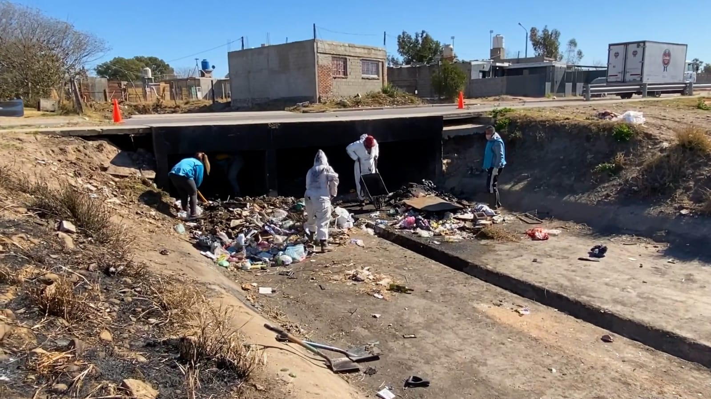

Elevado SLA 48 h 3 fotosBachesVV-2041
Av. San Martín 1200 · Centro
Reportá un bache, una luminaria apagada o un basural. Sumá apoyos con tus vecinos y convertí cada reclamo en una prioridad real para el municipio.
 Elevado
SLA prioritario
Elevado
SLA prioritario
Centro · hace 2 h
Todo lo que necesitás para participar, en un solo lugar.
Contá qué pasa, sumá fotos y ubicá el problema en el mapa.
Crear reporteExplorá los tickets del barrio, comentá y sumá tu apoyo.
Abrir tableroSeguí el cumplimiento del municipio y los tiempos de respuesta.
Ver métricasRevisá confirmaciones, avisos de SLA y estados del sistema.
Ver alertasReclamos recientes y los más apoyados por la comunidad. Cada reacción cuenta.

Elevado SLA 48 h 3 fotosAv. San Martín 1200 · Centro
Rivadavia y Sarmiento · Barrio Norte
Pasaje Los Álamos 300 · Los Aromos

Nuevo SLA 96 h 1 fotoMitre 450 · Centro

Resuelto SLA 72 h 2 fotosPlaza San Vicente · San Martín

Elevado SLA 24 h 5 fotosCostanera y Almirante Brown · Costanera
Sin trámites eternos ni llamados sin respuesta. Tu reporte queda público, suma apoyos y se mide.
Ubicá el problema en el mapa, contá qué está pasando y sumá hasta tres fotos actuales.
Cada reacción eleva la prioridad del reclamo y ajusta el SLA que el municipio debe cumplir.
Comentá, actualizá la evidencia y controlá los tiempos de respuesta desde el panel público.
Sumá tu reporte, apoyá el reclamo de un vecino y ayudanos a que cada problema tenga una respuesta con fecha.